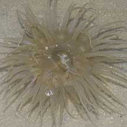
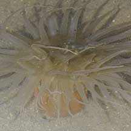
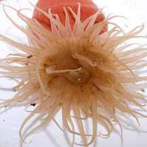
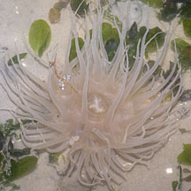
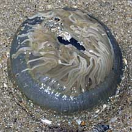
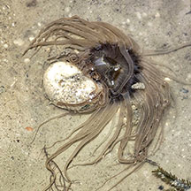
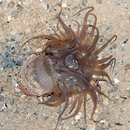
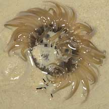

|
|
| sea anemones text index | photo index |
| Phylum Cnidaria > Class Anthozoa > Subclass Zoantharia/Hexacorallia > Order Actiniaria |
| Pearly
anemone Paracondylactis sinensis* Family Actiniidae updated Dec 2024 Where seen? This large and somewhat featureless anemone is sometimes seen on our shores. In silty sand near seagrass meadows on sheltered shores, as well as sandy artificial swimming lagoons. Features: Diameter with tentacles expanded 5-8cm. Many long, thick tapering tentacles that are translucent, usually unpatterned and beige or pinkish. The oral disk is also usually unpatterned and sometimes slightly darker than the tentacles. Body column smooth and plain without any bumps. It retracts its tentacles into the body column when out of water. Status and threats: There is inadequate information as at 2024 to make an informed assesment of its conservation status in Singapore. |
 Tanah Merah, Dec 09 |
 |
 This one had a bright red body column. St John's Island, Nov 12 |
 Chek Jawa, Sep 11 |
 Tanah Merah, Dec 09 |
 Attempting to eat a sea cucumber? Changi, Dec 25 Photo shared by Richard Kuah on facebook. |
*Species are difficult to positively identify without close examination.
On this website, they are grouped by external features for convenience of display.
| Pearly sea anemones on Singapore shores |
On wildsingapore
flickr
|
| Other sightings on Singapore shores |
 East Coast Park, Jun 15 |
 Seringat-Kias, Jun 09 |
|
Acknowledgements
|